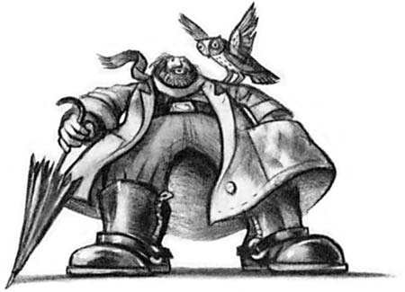
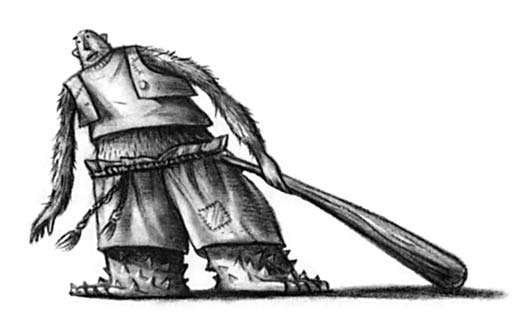

Зникле скло
Минуло майже десять років відтоді, коли, прокинувшись, подружжя Дурслі побачило на порозі свого племінника, але Прівіт-драйв навряд чи й змінилася. Над охайними садочками так само зійшло сонце, висвітило мідну табличку з номером 4 на дверях будинку Дурслі й проникло до вітальні, яка, здається, нітрохи не змінилася з того вечора, коли містер Дурслі дивився ті зловісні теленовини про сов. Хіба що фотографії на каміні показували, скільки насправді збігло часу. Десять років тому там стояло безліч фотографій чогось такого, що нагадувало великий рожевий надувний м'ячик у різнокольорових шапочках із бомбончиками, але тепер Дадлі Дурслі виріс, і на знімках можна було бачити дебелого білявого хлопця, що їздив на своєму першому велосипеді, крутився на ярмарковій каруселі, сидів із батьком за комп'ютерною грою, приймав материні обійми та поцілунки. В усій кімнаті ніщо не свідчило, що в будинку живе ще один хлопець.
Але Гаррі Поттер досі жив там і зараз він, власне, ще спав. Проте недовго, бо тітка Петунія вже прокинулась, і залунав її пронизливий голос.
Здригнувшись, Гаррі прокинувся. Тітка знову; затарабанила у двері. Гаррі почув, як вона йде на кухню, а потім звідти долинув брязкіт сковорідки, яку ставили на плиту. Він ліг горілиць і спробував пригадати свій сон. То був гарний сон. Йому снився летючий мотоцикл. Гаррі здалося, що він бачив цей сон і раніше.
День народження Дадлі - як він міг забути? Гаррі поволеньки виліз із ліжка й почав шукати шкарпетки. Знайшов їх під ліжком і, скинувши павука, натягнув на ноги. Гаррі звик до павуків, бо їх було повно в комірчині під сходами, а саме там він і спав.
Одягнувшись, пішов через коридор на кухню. Увесь стіл був завалений дарунками. Дадлі, здається, матиме, як і хотів, новий комп'ютер, уже не кажучи про другий телевізор та спортивний велосипед. Гаррі не розумів, навіщо Дадлі велосипед, адже його двоюрідний брат був товстунцем і не любив рухатися, хіба що, звісно, штурхав кого-небудь. Найдужче він полюбляв штурхати Гаррі, проте рідко коли наздоганяв його - Гаррі був на диво спритний.
Можливо, тому що жив у темній комірчині, Гаррі , як на свій вік, завжди був малим і миршавим. Але він видавався ще меншим і худішим, ніж насправді, бо щоразу мусив доношувати старий одяг Дадлі, а той був десь учетверо ширший від нього. Гаррі мав худе обличчя, гострі коліна, чорне волосся і ясно-зелені очі. Він носив круглі, обмотані скотчем окуляри, бо Дадлі часто ламав їх, луплячи його по носі. Єдине, що подобалося Гаррі у власному вигляді, - тонесенький шрам на чолі у формі блискавки. Він мав його, скільки себе пам'ятав, і першим його запитанням до тітки Петунії було, звідки той шрам узявся.
